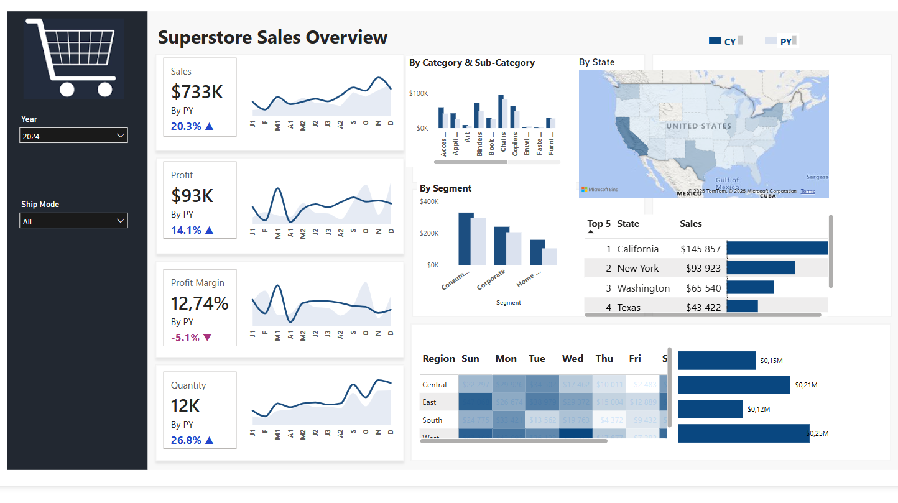

This interactive Power BI dashboard provides a detailed analysis of superstore sales performance. It enables comprehensive tracking of key metrics such as total sales, profit, quantity sold, and profit margin across different dimensions.
The dashboard features intuitive visualizations for understanding sales trends over time, performance by product category and customer segment, and geographical distribution of sales. Key insights can be quickly extracted to identify top-performing areas and products, as well as areas needing improvement, enabling data-driven strategic decisions for the business.
This project demonstrates strong skills in data modeling, DAX formula creation, and dashboard design within the Power BI environment, ensuring a user-friendly and actionable analytical tool.